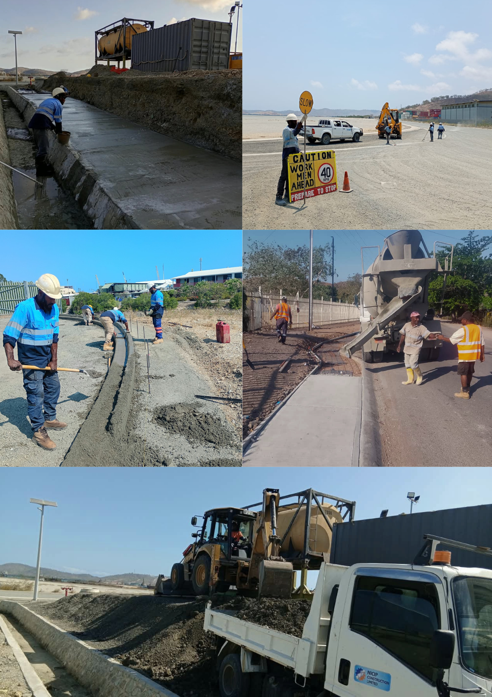

Our mission
To deliver top quality services in minor and major civil works, general construction and maintenance works, landscaping and waste management services.
A 100% nationally owned Papua New Guinean company delivering general construction, civil works, waste management and consulting services at an affordable cost, in urban and remote areas.
NICIP Construction Ltd is a reliable provider of general construction, civil works, waste management and consulting services for the public, corporate entities and government institutions. We are registered with the Investment Promotion Authority and operated entirely by PNG nationals qualified by merit.
Our core employees and skilled workers know the industry: about 90% are highly skilled technical people with extensive hands-on experience. An experienced engineer attends every job, with frequent on-site evaluation and liaison with the client.
Business Registration Number 1-143908216

To deliver top quality services in minor and major civil works, general construction and maintenance works, landscaping and waste management services.
To keep enhancing our role as a locally owned company that delivers quality services to clients and customers, and to be recognised for our work nationwide.
Four service lines, delivered by a locally owned team.
Practical, cost-effective advice on construction and waste management for clients in urban and remote areas.
Operated entirely by Papua New Guineans, qualified by merit and registered with the Investment Promotion Authority.
About 90% of our core employees and skilled workers are highly skilled technical people with hands-on experience.
An experienced engineer attends each project, with frequent site evaluation and liaison with the client.
We deliver quality work at an affordable cost, in town and in remote areas.
A selection of recent civil, drainage and utility works.

Vegetation clearing, site preparation and corridor establishment for future road development.

Reinforced stormwater drainage that improves water flow and reduces erosion.

Retaining structures for slope stabilisation, erosion control and site protection.

Road upgrades and maintenance that improve access, safety and pavement performance.

Restoration and upgrading of drainage damaged by heavy rainfall and catchment runoff.

Landscaping and beautification that improves both function and appearance of a site.

Pipelines, trenching, connection works and testing for water and sewer networks.

Access roads and gabion retaining structures for resilience and slope stability.
We provide and maintain a safe and healthy workplace for workers, contractors, clients, visitors and the public, and comply with health and safety legislation.
We are committed to minimising the impact of our activities on the local and global environment.
Our aim is to get it right first time, every time, delivering projects that are fit for purpose and exceed expectations.
Our direction supports Papua New Guinea’s Development Strategic Plan 2010–2030 and Vision 2050.
Contribute to income-generating opportunities through the government’s SME policies.
Build employment and skills for the local population, supporting sustainable livelihoods.
Keep quality construction services within reach of low-income earners and communities.
Be recognised nationwide as a trusted, locally owned construction company.